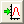

Wenn Sie ein 3D- oder Konturdiagramm auf Grundlage einer virtuellen Matrix im Arbeitsblatt zeichnen, wird eine virtuelle Matrix erzeugt. Sie können Hilfsmittel: Virtueller Matrixmanager verwenden oder run.section(file, VMManager) im Befehlsfenster oder Skriptfenster eingeben, um den Dialog Virtueller Matrixmanager aufzurufen, mit dem Sie die vorhandenen virtuellen Matrizen verwalten.
Eine Liste aller virtuellen Matrizen wird angezeigt. Sie haben die Möglichkeit, eine bestimmte virtuelle Matrix benutzerdefiniert anzupassen.
Über das Kontextmenü können Sie die ausgewählte virtuelle Matrix löschen oder duplizieren. Sie kann auch als XY-transponierte virtuuelle Matrix dupliziert werden.
| Name | Legen Sie einen Namen fest oder ändern Sie den Namen der ausgewählten virtuellen Matrix. |
|---|---|
| Z-Titel | Legen Sie einen Langnamen fest oder ändern Sie den Langnamen der aktuellen virtuellen Matrix. Sie können auf die Schaltfläche mit dem Pfeil klicken, um die Informationen des Quellarbeitsblatts im Ausklappmenü als Z-Titel wie im Dialog plotvm auszuwählen. |
| X-Titel | Legen Sie einen Namen für die X-Achse fest oder ändern Sie ihren Namen. Sie können auf die Schaltfläche mit dem Pfeil klicken, um die Informationen des Quellarbeitsblatts im Ausklappmenü als X-Titel wie im Dialog plotvm auszuwählen. |
| X-Datenformat | Legen Sie das Datenformat für die X-Achse fest. Klicken Sie auf die Schaltfläche , um das Datenformat im Dialog Daten formatieren festzulegen. |
| Y-Titel | Legen Sie einen Namen für die Y-Achse fest oder ändern Sie ihren Namen. Sie können auf die Schaltfläche mit dem Pfeil klicken, um die Informationen des Quellarbeitsblatts im Ausklappmenü als Y-Titel wie im Dialog plotvm auszuwählen. |
| Y-Datenformat | Legen Sie das Datenformat für die Y-Achse fest. Klicken Sie auf die Schaltfläche , um das Datenformat im Dialog Daten formatieren festzulegen. |
Der X-, Y- und Z-Datenbereich wird gezeigt.
Klicken Sie auf diese Schaltfläche , um das Arbeitsblatt zu öffnen, in dem sich die aktuelle virtuelle Matrix befindet.
Die zugehörigen Diagramme der aktuellen virtuellen Matrix werden aufgelistet. Klicken Sie doppelt auf den Diagrammnamen oder klicken Sie auf die Schaltfläche Zum Diagramm gehen , um zum Diagramm zu wechseln.
| Hinweis: Sie können über den Dialog Details Zeichnung des Diagramms zum virtuellen Matrixmanager gehen, indem Sie auf die Schaltfläche Arbeitsmappe klicken. |